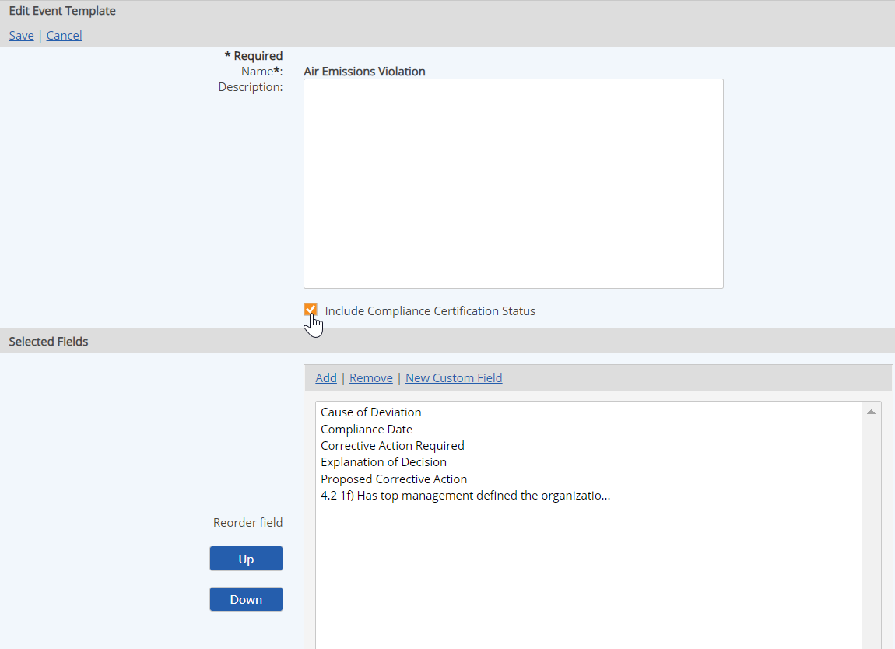

The Event Template holds the fields that will be used to document an event when it occurs. The fields that are available include:
To create or modify Event Templates, you must have the Manage Events right. In addition, to create new fields, you will also need the Manage Custom Fields right.
To create a new event template:
Select New Event Template.
Or right click anywhere in the Event Templates list and select New.
Enter a Name for the template and a Description.
The Description appears in the Event Templates list, and is not used in documenting an event, but may help users identify the purpose of the template when creating an Event Log.
Select Add to add fields to the template.
In the selection window, browse or use the search to find and select the fields to add to the template. Check the checkbox for the fields you want and click Select Fields.
The order in which the fields appear will be the display order on the event record. To re-order the fields, select a field and click the Up or Down button.
Set default value to value of previous instance: The default value of any custom field that takes manual entry (not including calculated fields) may be set to the value of the last instance. To enable this default behavior, select the field in the list, then check the box. The field will then appear in red in the list.
Include Compliance Certification Status: If you choose this option, a field Accept as Deviation? will be added to the event data fields. The user will then be able to decide whether or not the requirement should be considered out of compliance for this event. If the field is not selected, it will not be included in compliance reports. This option affects 1) manual event logs and 2) automatically generated events due to regulatory exceedances. The field does not appear for automatic events generated due to internal limit exceedances.

Optionally, you may associate documents with the event template. If a document is associated with the event template, the document will be attached to each event record created for every log that uses the template.
You may also associate documents with an event log. However, documents associated with the event log are applicable only to the specific event log, and are only accessible from the event log properties.
To associate a document, click Add in the Documents box, then search and select the document from the selection window.
Select Save.
If any custom calculated fields are included on the template, you must then define the calculation and specify a Start date for the calculation. See Calculated Numeric.
The calculation formula applies only to this template. It will not affect other templates in which the field may be used. You can edit a calculated numeric field on the Event Template in order to create different historical versions. See Versioning a Calculated Numeric Field.
The properties of the template are displayed for review.
To copy an Event Template:
Right click the template and choose Copy.